토목산업기사 (2016-03-06 기출문제)
1과목: 응용역학
1. 일반적인 보에서 휨모멘트에 의해 최대 휨응력이 발생되는 위치는 다음 어느 곳인가?
- 부재의 중립축에서 발생
- 부재의 상단에서만 발생
- 부재의 하단에서만 발생
- 부재의 상, 하단에서 발생
(정답률: 77%)

2. 그림과 같이 a×2a의 단면을 갖는 기둥에 편심거리 a/2만큼 떨어져서 P가 작용할 때 기둥에 발생할 수 있는 최대 압축응력은? (단, 기둥은 단주이다.)
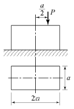
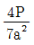
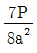
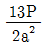
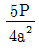
(정답률: 70%)
3. 30cm×50cm인 단면의 보에 6tf의 전단력이 작용할때 이 단면에 일어나는 최대 전단응력은?
- 3kgf/cm2
- 6kgf/cm2
- 9kgf/cm2
- 12kgf/cm2
(정답률: 75%)
4. 그림과 같은 연속보에서 B점의 지점반력은?
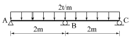
- 5tf
- 2.67tf
- 1.5tf
- 1tf
(정답률: 45%)
5. 기둥의 해석 및 단주와 장주의 구분에 사용되는 세 장비에 대한 설명으로 옳은 것은?
- 기둥단면의 최소 폭을 부재의 길이로 나눈값이다.
- 기둥단면의 단면 2차 모멘트를 부재의 길이로 나눈값이다.
- 기둥부재의 길이를 단면의 최소회전반경으로 나눈값이다.
- 기둥단면의 길이를 단면 2차 모멘트로 나눈값이다.
(정답률: 64%)
6. 동일 평면상의 한 점에 여러 개의 힘이 작용하고 있을 때, 여러 개의 힘의 어떤 점에 대한 모멘트의 합은 그 합력의 동일점에 대한 모멘트와 같다는 것은 다음 중 어떤 정리인가?
- Mohr의 정리
- Lami의 정리
- Castigliano의 정리
- Varignon의 정리
(정답률: 80%)
7. 그림과 같은 라멘은 몇 차 부정정인가?
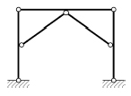
- 1차 부정정
- 2차 부정정
- 3차 부정정
- 4차 부정정
(정답률: 53%)
8. 변형에너지에 속하지 않는 것은?
- 외력의 일(External Work)
- 축방향 내력의 일
- 휨모멘트에 의한 내력의 일
- 전단력에 의한 내력의 일
(정답률: 76%)
9. 푸아송비(Poisson's Ratio)가 0.2일 때 푸아송수는?
- 2
- 3
- 5
- 8
(정답률: 76%)
10. 아래 그림과 같은 단순보의 양 지점에 같은 크기의 휨모멘트(M)가 작용할 때 A점의 처짐각은? (단, RA는 지점 A에서 발생하는 수직반력이다.)
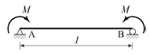
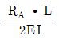
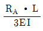
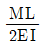
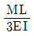
(정답률: 43%)
11. 아래 그림과 같은 삼각형에서 X-X축에 대한 단면 2차 모멘트는?(문제 오류로 그림파일이 없습니다. 정확안 그림 내용을 아시느분께서는 관리자 메일 또는 자유게시판에 첨부 부탁 드립니다. 정답은 1번입니다.)
- 2,532㎝4
- 2,845㎝4
- 3,114㎝4
- 3,426㎝4
(정답률: 63%)
12. 길이 L, 직경 D인 원형 단면 봉이 인장하중 P를받고 있다. 응력이 단면에 균일하게 분포한다고 가정할 때, 이 봉에 저장되는 변형에너지를 구한 값으로 옳은 것은? (단, 봉의 탄성계수는 E이다.)
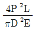
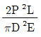
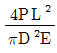
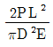
(정답률: 43%)
13. 다음 삼각형(ABC) 단면에서 y축으로부터 도심까지 의 거리는?
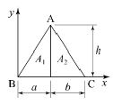
- 2a+b/3
- a+2b/2
- 2a+b/2
- a+2b/3
(정답률: 51%)
14. 그림과 같은 3-Hinge 아치의 수평반력 HA 는 몇 tf인가?
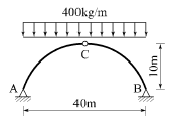
- 6
- 8
- 10
- 12
(정답률: 63%)
15. 다음 보에서 반력 RA는?
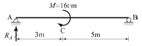
- 2tf(↓)
- 2tf(↑)
- 8tf(↓)
- 8tf(↑)
(정답률: 48%)
16. 직사각형 단면의 단순보가 등분포하중 ω를 받을 때 발생되는 최대 처짐에 대한 설명으로 옳은 것은?
- 보의 폭에 비례한다.
- 보의 높이의 3승에 비례한다.
- 보의 길이의 2승에 비례한다.
- 보의 탄성계수에 반비례한다.
(정답률: 68%)
17. 변형률이 0.015일 때 응력이 1,200kgf/cm2이면 탄성계수(E)는?
- 6×104kgf/cm2
- 7×104kgf/cm2
- 8×104kgf/cm2
- 9×104kgf/cm2
(정답률: 67%)
18. 아래 그림과 같은 단순보에서 최대 휨모멘트는?
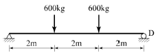
- 1,380kgf⋅fm
- 1,⑤6kgf⋅fm
- 1,260kgf⋅fm
- 1,200kgf⋅fm
(정답률: 63%)
19. 그림과 같은 구조물에서 부재 AB가 받는 힘의 크기는?
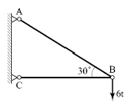
- 3tf
- 6tf
- 12tf
- 18tf
(정답률: 60%)
20. 다음 설명 중 옳지 않은 것은?
- 도심축에 대한 단면1차모멘트는 0(零)이다.
- 주축은 서로 45° 혹은 90°를 이룬다.
- 단면1차모멘트는 단면의 도심을 구할 때 사용된다.
- 단면2차모멘트의 부호는 항상(+)이다.
(정답률: 58%)
2과목: 측량학
21. 50m의 줄자를 이용하여 관측한 거리가 165m이었다. 관측 후 표준 줄자와 비교하니 2cm 늘어난 줄자였다면 실제의 거리는?
- 164.934m
- 165.006m
- 165.066m
- 165.122m
(정답률: 48%)
22. 노선측량의 순서로 옳은 것은?
- 도상 계획 - 예측 - 실측 - 공사 측량
- 예측 - 도상 계획 - 실측 - 공사 측량
- 도상 계획 - 실측 - 예측 - 공사 측량
- 예측 - 공사 측량 - 도상 계획 - 실측
(정답률: 67%)
23. 축척 1:1,000 에서의 면적을 관측하였더니 도상면적이 3cm2이었다. 그런데 이 도면 전체가 가로, 세로 모두 1%씩 수축되어 있었다면 실제면적은?
- 29.4m2
- 30.6m2
- 294m2
- 306m2
(정답률: 58%)
24. 측선 AB를 기선으로 삼각측량을 실시한 결과가 다음과 같을 때 측선 AC의 방위각은?
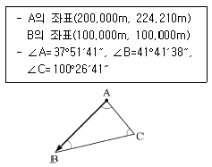
- 0° 58′33″
- 76° 41′55″
- 180° 58′33″
- 193° 18′⑤″
(정답률: 43%)
25. 초점거리 20cm인 카메라로 비행고도 6,500m에서 표고 500m인 지점을 촬영한 사진의 축척은?
- 1 : 25,000
- 1 : 30,000
- 1 : 35,000
- 1 : 40,000
(정답률: 46%)
26. 두 점간의 고저차를 레벨에 의하여 직접 관측할 때 정확도를 향상시키는 방법이 아닌 것은?
- 표척을 수직으로 유지한다.
- 전시와 후시의 거리를 가능한 같게 한다.
- 최소 가시거리가 허용되는 한 시준거리를 짧게 한다.
- 기계가 침하되거나 교통에 방해가 되지 않는 견고한 지반을 택한다.
(정답률: 58%)
27. GPS 위성의 기하학적 배치상태에 따른 정밀도 저하율을 뜻하는 것은?
- 다중경로(Multipath)
- DOP
- A/S
- 사이클 슬립(Cycle Slip)
(정답률: 50%)
28. 도로기점으로부터 교점까지의 거리가 850.15m이고, 접선장이 125.15m일 때 시단현의 길이는? (단, 중심말뚝 간격은 20m 이다.)
- 5.15m
- 10.15m
- 15.00m
- 20.00m
(정답률: 40%)
29. 원곡선 설치에 이용되는 식으로 틀린 것은? (단, R : 곡선반지름, I : 교각[단위:도(°)])
- 접선길이
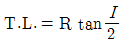
- 곡선길이
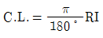
- 중앙종거
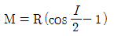
- 외할
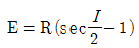
(정답률: 58%)
30. A, B 두 사람이 어느 2점간의 고저측량을 하여 다음과 같은 결과를 얻었다면 2점간의 고저차에 대한 최확값은?
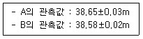
- 38.58m
- 38.60m
- 38.62m
- 38.63m
(정답률: 40%)
31. 수준측량에서 사용되는 용어에 대한 설명으로 틀린 것은?
- 전시란 표고를 구하려는 점에 세운 표척의 눈금을 읽는 것을 말한다.
- 후시란 미지점에 세운 표척의 눈금을 읽는 것을 말한다.
- 이기점이란 전시와 후시의 연결점이다.
- 중간점이란 전시만을 취하는 점이다.
(정답률: 58%)
32. 그림과 같은 지형도에서 저수지(빗금친 부분)의 집수면적을 나타내는 경계선으로 가장 적합한 것은?
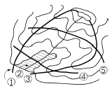
- ①과 ③사이
- ①과 ②사이
- ②와 ③사이
- ④와 ⑤사이
(정답률: 57%)
33. 정확도가 가장 높으나 조정이 복잡하고 시간과 비용이 많이 요구되는 삼각망은?
- 단열 삼각망
- 개방형 삼각망
- 유심 삼각망
- 사변형 삼각망
(정답률: 67%)
34. 트래버스 측량에서 각 관측 결과가 허용오차 이내 일 경우 오차처리 방법으로 옳은 것은?
- 각 관측 정확도가 같을 때는 각의 크기에 관계없이 등분배한다.
- 각 관측 경중률에 관계없이 등분배한다.
- 변 길이에 비례하여 배분한다.
- 각의 크기에 비례하여 배분한다.
(정답률: 39%)
35. 종단면도를 이용하여 유토곡선(mass curve)을 작성하는 목적과 가장 거리가 먼 것은?
- 토량의 배분
- 교통로 확보
- 토공장비의 선정
- 토량의 운반거리 산출
(정답률: 64%)
36. 하천단면의 유속 측정에서 수면으로부터의 깊이가 0.2h, 0.4h, 0.6h, 0.8h인 지점의 유속이 각각 0.562m/s, 0.512m/s, 0.497m/s, 0.364m/s 일 때 평균유속이 0.480m/s 이었다. 이 평균유속을 구한 방법은? (단, h : 하천의 수심)
- 1점법
- 2점법
- 3점법
- 4점법
(정답률: 56%)
37. 다각측량에서 경거 ㆍ 위거를 계산해야 하는 이유로써 거리가 먼 것은?
- 오차 및 정밀도 계산
- 좌표계산
- 오차배분
- 표고계산
(정답률: 57%)
38. 종단 및 횡단측량에 대한 설명으로 옳은 것은?
- 종단도의 종축척과 횡축척은 일반적으로 같게 한다.
- 일반적으로 횡단측량은 종단측량보다 높은 정확도가 요구된다.
- 노선의 경사도 형태를 알려면 종단도를 보면 된다.
- 노선의 횡단측량을 종단측량보다 먼저 실시하여 횡단도를 작성한다.
(정답률: 47%)
39. 항공사진측량에서 사진지표로 구할 수 있는 것은?
- 주점
- 표정점
- 연직점
- 부점
(정답률: 53%)
40. 1:50,000 지형도에서 표고 521.6m인 A점과 표고 317.3m인 B점 사이에 주곡선의 개수는?
- 7개
- 11개
- 21개
- 41개
(정답률: 55%)
3과목: 수리학
41. 그림과 같은 피토관에서 A점의 유속을 구하는 식으로 옳은 것은?
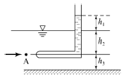
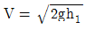
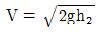
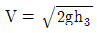
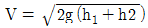
(정답률: 50%)
42. 관수로의 마찰손실수두에 관한 설명으로 틀린 것은?
- 관의 조도에 반비례한다.
- 관수로의 길이에 정비례한다.
- 층류에서는 레이놀즈수에 반비례한다.
- 관내의 직경에 반비례한다.
(정답률: 47%)
43. 직사각형단면의 개수로에 흐르는 한계 유속을 표시한 것은? (단, Vc : 한계유속, he : 한계수심, α : 에너지 보정계수)
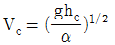
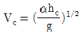
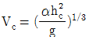
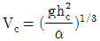
(정답률: 33%)
44. 모세관 현상에 의하여 상승한 액체기둥은 어떤 힘들이 평형을 이루어서 정지상태를 유지하고 있는가?
- 부착력에 의한 상방향의 힘과 중력에 의한 하방향의 힘
- 표면장력에 의한 상방향의 힘과 중력에 의한 하방향의 힘
- 표면 장력에 의한 상방향의 힘과 응집력에 의한 하방향의 힘
- 응집력에 의한 상방향의 힘과 부착력에 의한 하방향의 힘
(정답률: 46%)
45. 폭 3m인 직사각형단면 수로에서 최소비에너지가 2m일 때 발생할 수 있는 최대유량은?
- 9.83m3/s
- 11.7m3/s
- 13.3m3/s
- 14.4m3/s
(정답률: 31%)
46. 관수로에 물이 흐르고 있을 때 유속을 구하기 위하여 적용할 수 있는 식은?
- Torricelli 정리
- 파스칼의 원리
- 운동량 방정식
- 물의 연속 방정식
(정답률: 48%)
47. 그림과 같은 원형관에 물이 흐를 경우 1, 2, 3 단면에 대한 설명으로 옳은 것은? (단, D1=30cm, D2=10cm, D3=20cm이며 에너지손실은 없다고 가정한다.)
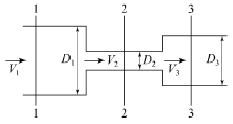
- 유속은 V2 ＞V3 ＞ V1이 되며 압력은 1단면 ＞ 3단면 ＞ 2단면이다.
- 유속은 V1 ＞V3 ＞ V2이 되며 압력은 2단면 ＞ 3단면 ＞ 1단면이다.
- 유속은 V2 ＞V3 ＞ V1이 되며 압력은 3단면 ＞ 1단면 ＞ 2단면이다.
- 1, 2, 3단면의 유속과 압력은 같다.
(정답률: 54%)
48. 그림에서 곡면 AB에 작용하는 전수압의 수평분력은? (단, 곡면의 폭은 1m이고, γ는 물의 단위중량임.)
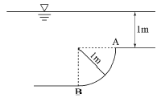
- 4.7γm3
- 3.5γm3
- 3γm3
- 1.5γm3
(정답률: 38%)
49. 유체의 흐름이 일정한 방향이 아니고, 무작위하게 3차원 방향으로 이동하면서 흐르는 흐름은?
- 층류
- 난류
- 정상류
- 등류
(정답률: 64%)
50. 직각 삼각위어(weir)에서 월류 수심이 1m이면 유량은? (단, 유량계수 C=0.59 이다.)
- 1.0m3/s
- 1.4m3/s
- 1.8m3/s
- 2.2m3/s
(정답률: 38%)
51. Darcy의 법칙에 대한 설명으로 옳은 것은?
- 점성계수를 구하는 법칙이다.
- 지하수의 유속은 동수경사에 비례한다는 법칙이다.
- 관수로의 흐름에 대한 상사법칙이다.
- 개수로의 흐름에 대한 상사법칙이다
(정답률: 43%)
52. 대수층이 두께 3.8m, 폭 1.5m일 때 지하수의 유량은? (단, 상, 하류 두 지점 사이의 수두차 1.6m, 수평거리 520m, 투수계수 K=300m/d)
- 4.28m3/d
- 5.26m3/d
- 6.38m3/d
- 7.46m3/d
(정답률: 42%)
53. 그림과 같은 병렬관수로에서 d1:d2= 3 : 1, l1:l2 = 1 : 3 이며 f1= f2일 때 V1/V2는?
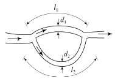
- 1/2
- 1
- 2
- 3
(정답률: 45%)
54. 물의 밀도 ρ, 점성계수 μ, 그리고 동점성계수 v사이의 관계식으로 옳은 것은?
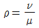
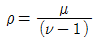
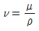
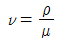
(정답률: 49%)
55. 안지름 0.5m, 두께 20mm의 수압관이 15N/cm2의 압력을 받고 있을 때, 관벽에 작용하는 인장응력은?
- 46.8N/cm2
- 93.7N/cm2
- 140.6N/cm2
- 187.5N/cm2
(정답률: 31%)
56. 사다리꼴 수로에서 수리학상 가장 경제적인 단면의 조건은? (단, R : 동수반경, B : 수면폭, H :수심)
- R = 2H
- B = 2H
- R = H/2
- B = H
(정답률: 43%)
57. 유속 20m/s, 수평면과의 각 60°로 사출된 분수가 도달하는 최대 연직높이는? (단, 공기 및 기타 저항은 무시한다.)
- 12.3m
- 13.3m
- 14.3m
- 15.3m
(정답률: 49%)
58. 양쪽의 수위가 다른 저수지를 벽으로 차단하고 있는 상태에서 벽의 오리피스를 통하여 ①에서 ②로 물이 흐르고 있을 때 하류측 에서의 유속은?
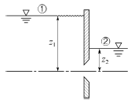
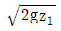
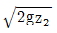
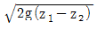
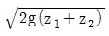
(정답률: 54%)
59. 그림과 같은 역사이폰의 A, B, C, D점에서 압력수 두를 각각 PA, PB, PC, PD라 할 때 다음 사항 중 옳지 않은 것은? (단, 점선은 동수경사선으로 가정한다.)
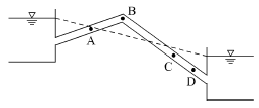
- PC＞PD
- PB＜0
- PC＞0
- PA=0
(정답률: 55%)
60. 그림과 같은 콘크리트 케이슨이 바다 물에 떠있을 때 홀수는? (단, 콘크리트 비중은 2.4이며, 바다물의 비중은 1.025이다.)
- x=2.35m
- x=2.55m
- x=2.75m
- x=2.95m
(정답률: 34%)
4과목: 철근콘크리트 및 강구조
61. 경간이 6m, 폭 300mm, 유효깊이 500mm인 단철근 직사각형 단순보가 전단철근 없이 지지할 수 있는 최대 전단강도 Vu는? (단, 자중의 영향은 무시하며 fck=21MPa)
- 35.0kN
- 43.0kN
- 55.0kN
- 65.0kN
(정답률: 51%)
62. 단면 형상은 T형보이지만 설계 계산은 직사각형보와 같이 하는 경우는?
- bω ≤ t
- bω ＞ t
- a ≤ t
- a ＞ t
(정답률: 37%)
63. 나선철근으로 둘러싸인 압축부재의 축방향주철근의 최소 개수는?
- 4개
- 6개
- 7개
- 8개
(정답률: 47%)
64. 단철근 직사각형보를 균형보로 설계할 때 콘크리트의 압축 측 연단에서 중립축까지의 거리가 250m이고, 콘크리트 설계기준압축 강도(fck)가 38MPa이라면, 등가응력 직사각형의 깊이(a)는?
- 156mm
- 174mm
- 195mm
- 213mm
(정답률: 49%)
65. 강도설계법의 기본 가정 중 옳지 않은 것은?
- 휨응력 계산에서 콘크리트의 인장강도는 무시한다.
- 콘크리트의 압축응력 분포도는 사각형, 사다리꼴, 포물선 또는 기타 다른 형상으로 가정할 수 있다.
- 철근과 콘크리트의 변형률은 중립축으로부터의 거리에 비례한다.
- 콘크리트와 철근이 모두 후크(HooKe)의 법칙을 따른다고 가정한다
(정답률: 45%)
66. 복철근 단면으로 설계하는 이유에 대한 설명으로 틀린 것은?
- 처짐을 억제하여야 할 경우
- 연성을 극소화 시켜야 할 경우
- 정(+), 부(-) 모멘트가 한 단면에서 반복되는 경우
- 보의 높이가 제한되어 단철근 단면으로는 설계모멘트를 감당할 수 없을 경우
(정답률: 43%)
67. 사용 고정하중(D)과 활하중(L)을 작용시켜서 단면에서 구한 휨모멘트는 각각 MD=10kN‧m, ML=20kN‧m이었다. 주어진 단면에 대해서 현행 콘크리트구조기준에 의거 최대 소요강도를 구하면?
- 33kN‧m
- 39.6kN‧m
- 40.8kN‧m
- 44kN‧m
(정답률: 53%)
68. 단면의 폭 400mm, 보의 유효깊이 600mm, 콘크리트의 설계기준강도 25MPa로 설계된 전단철근이 있는 보가있다. 이 보의 콘크리트가 받을 수 있는 전단력(Vc)은?
- 50kN
- 100kN
- 150kN
- 200kN
(정답률: 51%)
69. 강교량에 주로 사용되는 판형(plate girder)의 보강재에 대한 설명으로 옳지 않은 것은?
- 보강재는 복부판의 전단력에 따른 좌굴을 방지하는 역할을 한다.
- 보강재는 단보강재, 중간보강재, 수평보강재가 있다.
- 수평보강재는 복부판이 두꺼운 경우에 주로 사용된다.
- 보강재는 지점 등의 이음부분에 주로 설치한다.
(정답률: 47%)
70. 다음 그림과 같이 용접이음을 했을 경우 전단응력은?
- 78.9MPa
- 67.5MPa
- 57.5MPa
- 45.9MPa
(정답률: 60%)
71. 압축 측 연단의 콘크리트 변형률이 0.003에 도달할때, 최외단 인장철근의 순인장변형률이 0.0⑤이상인 단면의 강도감소계수는? (단, fy≤400MPa이다.)
- 0.85
- 0.75
- 0.70
- 0.65
(정답률: 44%)
72. 표준갈고리를 갖는 인장 이형철근의 정착길이(ldh)에 대한 설명으로 옳은 것은? (단, db : 철근의 공칭지름)
- 정착길이(ldh)는 항상 8db 이상 또한 150mm이상이어야 한다.
- 정착길이(ldh)는 항상 8db 이상 또한 300mm이상이어야 한다.
- 정착길이(ldh)는 항상 16db 이상 또한 300mm이상이어야 한다.
- 정착길이(ldh)는 항상 16db 이상 또한 300mm이상이어야 한다.
(정답률: 32%)
73. 옹벽의 안정조건 중 활동에 대한 안정에 관한 설명으로 옳은 것은?
- 활동에 대한 저항력은 옹벽에 작용하는 수평력의 1.5배 이상이어야 한다.
- 전도에 대한 저항 휨모멘트는 횡토압에 의한 전도모멘트의 1.5배 이상이어야 한다.
- 옹벽에 작용하는 수평력은 활동에 대한 저항력의 2.0배 이상이어야 한다.
- 횡토압의 의한 전도모멘트는 전도에 대한 저항 휨모멘트의 2.0배 이상이어야 한다.
(정답률: 31%)
74. 철근콘크리트 1방향 슬래브에 대한 설명으로 틀린 것은?
- 마주보는 두변에만 지지되는 슬래브는 1방향 슬래브로 설계하여야 한다.
- 4변이 지지되고 장변의 길이가 단변의 길이의 2배를 초과하는 경우 1방향 슬래브로 해석한다.
- 슬래브의 두께는 최소 50mm 이상으로 하여야 한다
- 슬래브의 정모멘트 철근 및 부모멘트 철근의 중심간격은 위험단면에서는 슬래브 두께의 2배 이하이어야 하고, 또한 300mm 이하로 하여야 한다
(정답률: 56%)
75. 그림과 같은 단순보에서 자중을 포함하여 계수하중이 30kN/m 작용하고 있다. 이 보의 위험단면에서 전단력은?
- 90kN
- 115kN
- 120kN
- 135kN
(정답률: 33%)
76. 일반 콘크리트에서 인장철근 D22(공칙직경 : 22.2mm)를 정착시키는데 필요한 기본 정착 길이(lab)는? (단, fck=28MPa, fy=400MPa 이다.)
- 300mm
- 765mm
- 1,007mm
- 1,204mm
(정답률: 55%)
77. PS 강재에 요구되는 성질이 아닌 것은?
- 인장강도가 클 것
- 릴랙세이션이 적을 것
- 취성이 좋을 것
- 응력부식에 대한 저항성이 클 것
(정답률: 40%)
78. 프리스트레스의 감소원인이 아닌 것은?
- 콘크리트의 건조수축과 크리프
- PS강재의 항복강도
- 콘크리트의 탄성변형
- PS강재의 미끄러짐과 마찰
(정답률: 43%)
79. 다음과 같은 단면을 갖는 프리텐션 보에 초기 긴장력 Pi=250kN이 작용할 때, 콘크리트 탄성변형에 의한 프리스트레스 감소량은? (단, n =7이고, 보의 자중은 무시한다.)
- 24.3MPa
- 29.5MPa
- 34.3MPa
- 38.1MPa
(정답률: 32%)
80. 아래 그림과 같은 단철근 직사각형보에서 등가직사각형 응력블록의 깊이(a)는? (단, As=3,176mm2, fck=28MPa, fy=400MPa)
- 133mm
- 167mm
- 214mm
- 256mm
(정답률: 54%)
5과목: 토질 및 기초
81. 동해(凍害)는 흙의 종류에 따라 그 정도가 다르다. 다음 중 가장 동해가 심한 것은?
- Colloid
- 점토
- Silt
- 굵은 모래
(정답률: 59%)
82. 말뚝의 허용지지력을 구하는 Sander의 공식은? (단, Ra : 허용지지력, S : 관입량, WH : 해머의 중량, H : 낙하고 )
(정답률: 52%)
83. 가로 2m, 세로 4m의 직사각형 케이슨이 지중 16m까지 관입되었다. 단위면적당 마찰력 f=0.02t/m2일 때 케이슨에 작용하는 주면마찰력(skin friction)은?
- 2.75t
- 1.92t
- 3.84t
- 1.28t
(정답률: 27%)
84. 그림과 같은 모래지반의 토질실험결과 내부마찰각 ø=30°, 점착력 C=0일 때 깊이 4m되는 A점에서의 전단강도는?
- 1.25t/m2
- 1.72t/m2
- 2.17t/m2
- 2.83t/m2
(정답률: 47%)
85. 말뚝의 부마찰력에 대한 설명으로 틀린 것은?
- 말뚝이 연약지반을 관통하여 견고한 지반에 박혔을때 발생한다.
- 지반에 성토나 하중을 가할 때 발생한다.
- 지하수위 저하로 발생한다.
- 말뚝의 타입 시 항상 발생하며 그 방향은 상향이다.
(정답률: 51%)
86. 압밀계수(cv)의 단위로서 옳은 것은?
- cm/sec
- cm2/kg
- kg/cm
- cm2/sec
(정답률: 43%)
87. 일축압축강도는 0.32kg/cm2, 흙의 단위중량 1.6t/m3이고, ø=0인 점토지반을 연직굴착할 때 한계고는?
- 2.3m
- 3.2m
- 4.0m
- 5.2m
(정답률: 38%)
88. 정지토압 Po, 주동토압 Pa, 수동토압 Pp의 크기순서가 올바른 것은?
- Pa ＜ Po ＜ Pp
- Po ＜ PPp ＜ Pa
- Po ＜ Pa ＜ Pp
- Pp ＜ Po ＜ Pa
(정답률: 51%)
89. 내부마찰각 ø=0°인 점토에 대하여 일축압축시험을하여 일축압축강도 qu=3.2kg/cm2을 얻었다면 점착력 c는?
- 1.2kg/cm2
- 1.6kg/cm2
- 2.2kg/cm2
- 6.4kg/cm2
(정답률: 52%)
90. 분사현상(Quick sand action)에 관한 그림이 아래와 같을 때 수두차 h를 얼마 이상으로 하면 모래시료에 분사 현상이 발생하겠는가?(단, 모래의 비중 2.60, 간극률 50%)
- 6cm
- 12cm
- 24cm
- 30cm
(정답률: 49%)
91. 흙에 대한 일반적인 설명으로 틀린 것은?
- 점성토가 교란되면 전단강도가 작아진다.
- 점성토가 교란되면 투수성이 커진다.
- 불교란시료의 일축압축강도와 교란시료의 일축압축강도와의 비를 예민비라 한다.
- 교란된 흙이 시간경과에 따라 강도가 회복되는 현상을 딕소트로피(Thixotropy) 현상이라 한다.
(정답률: 39%)
92. 모래의 내부마찰각 ø와 N치와의 관계를 나타낸 Dunham의 식 에서 상수C의 값이 가장 큰 경우는?
- 토립자가 모나고 입도분포가 좋을 때
- 토립자가 모나고 균일한 입경일 때
- 토립자가 둥글고 입도분포가 좋을 때
- 토립자가 둥글고 균일한 입경일 때
(정답률: 42%)
93. 표준관입시험에 관한 설명으로 틀린 것은?
- 해머의 질량은 63.5kg이다.
- 낙하고는 85cm이다.
- 표준 관입 시험용 샘플러를 지반에 30cm 박아 넣는데 필요한 타격 횟수를 N값이라고 한다.
- 표준관입시험값 N은 개략적인 기초 지지력 측정에 이용되고 있다.
(정답률: 54%)
94. 흙의 입도시험에서 얻어지는 유효입경(有效粒經 :D10)이란?
- 10mm체 통과분을 말한다.
- 입도분포곡선에서 10% 통과 백분율을 말한다.
- 입도분포곡선에서 10% 통과 백분율에 대응하는 입경을 말한다.
- 10번체 통과 백분율을 말한다.
(정답률: 50%)
95. 포화도 75%, 함수비 25%, 비중 2.70일 때 간극비는?
- 0.9
- 8.1
- 0.08
- 1.8
(정답률: 50%)
96. 유선망의 특징에 관한 다음 설명 중 옳지 않은 것은?
- 각 유로의 침투수량은 같다.
- 유선과 등수두선은 서로 직교한다.
- 유선망으로 되는 사각형은 이론상으로 정사각형이다.
- 침투속도 및 동수경사는 유선망의 폭에 비례한다.
(정답률: 43%)
97. 말뚝의 평균 지름이 140cm, 관입깊이 15m일 때 군말뚝의 영향을 고려하지 않아도 되는 말뚝의 최소 간격은?
- 약 3m
- 약 5m
- 약 7m
- 약 9m
(정답률: 41%)
98. 여러 종류의 흙을 같은 조건으로 다짐 시험을 하였을 경우 일반적으로 최적함수비가 가장 작은 흙은?
- GW
- ML
- SP
- CH
(정답률: 47%)
99. 아래 그림과 같은 수중지반에서 Z지점의 유효연직응력은?
- 2t/m2
- 4t/m2
- 9t/m2
- 14t/m2
(정답률: 34%)
100. 충분히 다진 현장에서 모래 치환법에 의한 현장밀도 실험을 한 결과 구멍에서 파낸 흙의 무게 1,536g, 함수비가 15%이었고 구멍에 채워진 단위중량이 1.70g/cm3인 표준모래의 무게가 1,411g이었다. 이 현장이 95% 다짐도가 된 상태가 되려면 이 흙의 실내실험실에서 구한 최대건조단위량(γmax)은?
- 1.69g/cm3
- 1.79g/cm3
- 1.85g/cm3
- 1.93g/cm3
(정답률: 30%)
6과목: 상하수도공학
101. 상수의 소독방법 중 염소살균과 오존살균에 대한 설명으로 옳지 않은 것은?
- 오존의 살균력은 염소보다 우수하다.
- 오존살균은 배오존 처리설비가 필요하다.
- 오존살균은 염소살균에 비하여 잔류성이 강하다.
- 염소살균은 발암물질인 트리할로메탄(THM)을 생성시킬 가능성이 있다.
(정답률: 46%)
102. 하수관에서는 95% 가량 차서 흐를 때가 가득차서 흐를 때보다 유량이 10% 가량 더 많고, 이때가 최대유량이라고 한다면 직경 200mm, 관저 기울기 0.0⑤인 하수관로의 최대유량은? (단, Manning 공식을 사용하고, n= 0.013이다.)
- 91.8m3/hr
- 83.5m3/hr
- 76.4m3/hr
- 71.2m3/hr
(정답률: 26%)
103. 하수처리장 계획시 고려할 사항으로 옳지 않은 것은?
- 처리시설은 계획시간 최대오수량을 기준으로 하여 계획한다.
- 처리장의 부지면적은 확장 및 향후 고도처리계획 등을 예상하여 계획한다.
- 처리장 위치는 방류수역의 물 이용상황 및 주변의 환경조건을 고려하여 결정한다.
- 처리시설은 이상 수위에서도 침수되지 않는 지반고에 설치하거나 방호시설을 설치한다.
(정답률: 41%)
104. 하수관거시설 중 연결관에 대한 설명으로서 옳지 않은 것은?
- 연결관의 경사는 1% 이상으로 한다.
- 연결관의 최소관경은 150mm로 한다.
- 연결위치는 본관의 중심선보다 아래로 한다.
- 본관 연결부는 본관에 대하여 60° 또는 90°로 한다.
(정답률: 30%)
1⑤. 계획취수량의 기준이 되는 것은?
- 계획시간 최대배수량
- 계획1일 평균배수량
- 계획시간 최대급수량
- 계획1일 최대급수량
(정답률: 55%)
106. 계획1일 평균급수량이 400L, 계획시간 최대급수량이 25L, 계획1일 최대급수량이 500L일 경우에 계획첨두율은?
- 1.50
- 1.25
- 1.2
- 20.0
(정답률: 47%)
107. 하천에 오수가 유입될 때 하천의 자정작용 중 최초의 분해지대에서 BOD가 감소하는 주원인은?
- 유기물의 침전
- 탁도의 증가
- 온도의 변화
- 미생물의 번식
(정답률: 51%)
108. 도수관에 설치되는 공기밸브에 대한 설명 중 틀린 것은?
- 관로의 종단도 상에서 상향 돌출부의 상단에 설치한다.
- 관로 중 제수밸브 사이에 공기밸브를 설치할 경우낮은 쪽 제수밸브 바로 위에 설치한다.
- 매설관에 설치하는 공기밸브에는 밸브실을 설치한다.
- 공기밸브에는 보수용의 제수밸브를 설치한다.
(정답률: 50%)
109. 활성슬러지법에 의하여 폐수를 처리할 경우 폭기조 혼합액의 MLSS가 2,000mg/L이고, 이것을 30분간 정체시킨 침전슬러지량이 시료의 30%라면 슬러지 지표(SVI)는?
- 50
- 100
- 150
- 200
(정답률: 36%)
110. 취수원의 성층현상에 관한 설명으로 틀린 것은?
- 수심에 따른 수온 변화가 가장 큰 원인이다.
- 수온변화에 따른 물의 밀도 변화가 근본 원인이다.
- 여름철에 두드러진 현상이다.
- 영양염류의 유입이 원인이다.
(정답률: 49%)
111. 하수관거에서 관정부식(crown corrosion)의 주된원인 물질은?
- 황화합물
- 질소화합물
- 철화합물
- 인화합물
(정답률: 52%)
112. 수원의 구비요건으로 틀린 것은?
- 수질이 좋아야 한다.
- 수량이 풍부하여야 한다.
- 정수장보다 가능한 한 낮은 곳에 위치하여야 한다.
- 상수 소비지에서 가까운 곳에 위치하는 것이 좋다.
(정답률: 53%)
113. 계획우수량의 고려 사항에 관한 설명으로서 틀린 것은?
- 우수유출량의 산정을 위한 합리식에서 I는 관거의 동수경사를 나타낸다.
- 하수관거의 확률년수는 10∼30년을 원칙으로 한다.
- 유달시간은 유입시간과 유하시간을 합한 것이다.
- 총 유하시간은 관거 구간마다의 거리와 계획유량에 대한 유속으로부터 구한 구간 당 유하시간을 합계하여 구한다.
(정답률: 39%)
114. 송수관의 유속에 대하여 ( )에 알맞은 내용으로 짝지어진 것은?
- 3.0, 0.3
- 3.0, 0.6
- 6.0, 0.3
- 6.0, 0.6
(정답률: 50%)
115. 고도정수처리가 아닌 일반정수처리 공정에서 잘 제거되지 않는 물질은?
- 세균
- 탁도
- 질산성 질소
- 암모니아성 질소
(정답률: 34%)
116. 상수 원수의 냄새·맛 제거에 이용되는 일반적인 방법이 아닌 것은?
- 오존 처리
- 입상활성탄 처리
- 폭기(aeration)
- 마이크로스트레이너(microstrainer)
(정답률: 44%)
117. 슬러지의 혐기성 소화에 대한 설명으로 옳지 않은 것은?
- 온도, pH의 영향을 쉽게 받는다.
- 호기성처리보다 분해속도가 느리다.
- 호기성처리에 비해 유지비가 경제적이다.
- 정상적인 소화시 가장 많이 발생되는 가스는 CO2이다.
(정답률: 50%)
118. 하수량 40,000m3/day, BOD농도 300mg/L 하수를 체류시간 6시간의 활성슬러지 방식인 폭기조에서 처리하고자 한다. 폭기조를 2개조 운영하려고 할 경우 1개조의 폭기조 용적은?
- 2,500m3
- 3,500m3
- 5,000m3
- 7,000m3
(정답률: 36%)
119. 펌프장의 설계 시 검토하여야 할 비정상 현상으로 아래에서 설명하고 있는 것은?
- 서어징(surging)
- 캐비테이션(cavitation)
- 수격 작용(water hammer)
- 팽화 현상(bulking)
(정답률: 58%)
120. Ripple법에 의하여 저수지 용량을 결정하려고 한다. 그림에서 필요저수용량을 표시한 구간은? (단, 직선 는 에 평행하고 누가수량차는 E가 F보다 크다.) (그림 오류로 현재 복원중입니다. 그림 내용을 아시는 분들께서는 오류 신고를 통하여 보기 작성 부탁 드립니다. 정답은 1번입니다.)
- ㉠
- ㉡
- ㉢
- ㉣
(정답률: 28%)